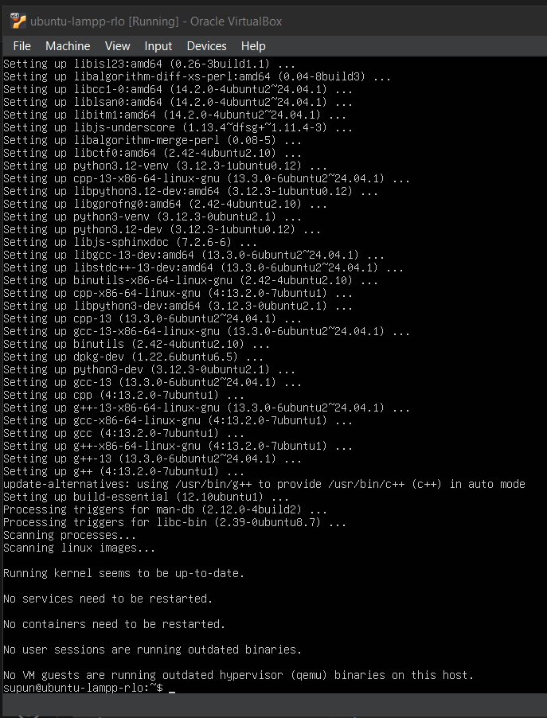
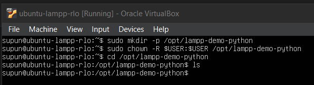
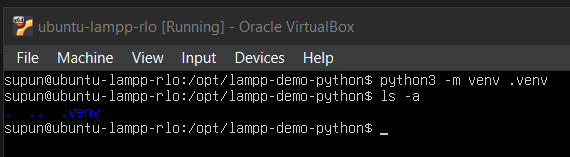
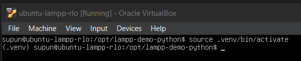
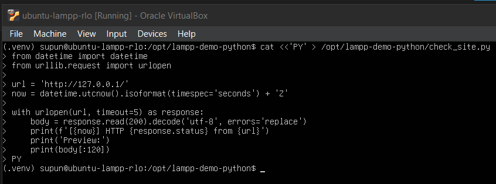
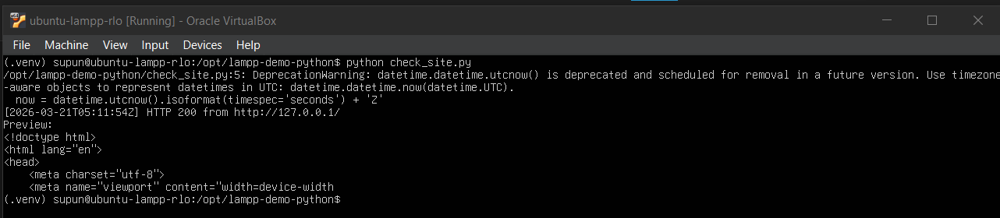
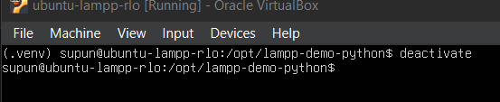

Module 7 - Install Python and Run an Automation Script
Install Python packaging tools, create a virtual environment, and run a script that checks the local web application.
What you will complete
- Install Python package-management support.
- Create and activate a virtual environment.
- Run a small health-check automation script.
Background
Python virtual environments isolate project-specific tooling from the system interpreter, which makes automation work easier to reproduce without changing the server's global Python environment. That isolation is useful for lightweight health checks like the one in this module because the script can be rerun later with the same local setup [14].
Steps
Install Python support packages
Ubuntu includes Python itself, but this module also needs package-management and virtual-environment support so the automation workflow is isolated and repeatable.
1. Install the Python tooling packages
- Run
sudo apt install python3-pip python3-venv -y.Install Python support packagessudo apt install python3-pip python3-venv -y
Python package install: Let the installation finish completely. A successful run returns to the shell prompt after the Python package-management and virtual-environment support packages are configured. - Wait for the package installation to finish fully.
- Confirm there are no package errors before creating the project directory.
2. Understand the purpose of the tools
python3-pipgives you Python package installation support if you need it later.python3-venvallows you to create isolated Python environments for small automation projects.- Even though this demo does not install third-party modules, using a virtual environment is still good practice.
Create a virtual environment
Keep the automation project separate from the web application. The Python script belongs under /opt/lampp-demo-python, and the virtual environment should live inside that project folder.
1. Create the project directory
- Create
/opt/lampp-demo-python.Create the project directorysudo mkdir -p /opt/lampp-demo-python - Change ownership to your normal user so you can create files there without running the project as root.
Give your user ownership of the project folder
sudo chown -R $USER:$USER /opt/lampp-demo-python - Verify that you can enter the directory and list its contents.
Enter the project directory
cd /opt/lampp-demo-pythonList the project directory contentsls
Project directory ready: After creating the folder and updating ownership, you should be able to enter /opt/lampp-demo-pythonand list its contents. At this point the directory can still be empty.
2. Create the virtual environment
- From inside the project directory, run
python3 -m venv .venv.Create a virtual environmentcd /opt/lampp-demo-python && python3 -m venv .venv - Wait for the environment creation to finish. This creates an isolated Python interpreter and supporting scripts.
- Confirm the
.venvdirectory now exists.Show hidden files in the project directoryls -a
Virtual environment created: After python3 -m venv .venvfinishes, usels -ato confirm that the hidden.venvdirectory now exists inside the project folder.
3. Activate it before running Python commands
- Run
source .venv/bin/activatefrom the project directory.Activate the virtual environmentcd /opt/lampp-demo-python && source .venv/bin/activate
Environment activated: A successful activation changes the shell prompt to include (.venv), showing that subsequent Python commands will use the isolated environment. - Notice that the shell prompt changes to show the active environment.
- Keep that environment active while creating and running the health-check script.
Create and run the health check
The goal of the script is simple: request the locally hosted site and report whether the stack returns a successful HTTP response. Using the built-in urllib module keeps the example lightweight.
1. Create the script file
- Create
/opt/lampp-demo-python/check_site.py.Create the health-check scriptcat <<'PY' > /opt/lampp-demo-python/check_site.py from datetime import datetime from urllib.request import urlopen url = 'http://127.0.0.1/' now = datetime.utcnow().isoformat(timespec='seconds') + 'Z' with urlopen(url, timeout=5) as response: body = response.read(200).decode('utf-8', errors='replace') print(f'[{now}] HTTP {response.status} from {url}') print('Preview:') print(body[:120]) PY
Health-check script created: This heredoc writes check_site.pyinside the project folder while the virtual environment is active, then returns to the shell prompt with no extra output when it succeeds. - Use Python code that sends a request to
http://127.0.0.1/. - Include a timestamp in the output so the result looks like a real automation check.
- Print both the HTTP status code and a short preview of the returned HTML.
2. Run the script inside the virtual environment
- With the virtual environment still active, run
python check_site.py.Run the health-check scriptcd /opt/lampp-demo-python && source .venv/bin/activate && python check_site.py
Health-check result: A successful run prints an HTTP 200response and a short HTML preview from the deployed site. Focus on the response and preview lines shown here when validating the result. - Confirm the script prints an
HTTP 200response. - Confirm the response preview contains HTML from the deployed site rather than an error page.
3. Close the environment cleanly
- Run
deactivateafter the test completes.Deactivate the virtual environment when finisheddeactivate
Environment closed: After deactivate, the(.venv)prefix disappears from the shell prompt, confirming that you are back in the system Python environment. - This returns the shell to the system Python environment.
- Keep the script and environment in place so you can rerun the health check during final validation.
Troubleshooting
| Issue | What to check |
|---|---|
| python3 -m venv fails | Make sure python3-venv is installed. |
| HTTP request times out | Confirm Apache is active and the site loads locally in the browser or with curl http://127.0.0.1/. |
| Permission denied under /opt | Use sudo chown -R $USER:$USER /opt/lampp-demo-python before creating files there. |
Evidence to capture
- A screenshot showing the Python tooling packages installed successfully.
- A screenshot of the directory listing showing that the
.venvvirtual environment was created inside/opt/lampp-demo-python. - A screenshot of the shell after activation showing the virtual environment is active.
- A screenshot of the terminal output from
python check_site.pyshowing anHTTP 200response. - A screenshot of the response preview showing HTML returned from the deployed site.
Optional further reading
These sources are optional and are provided for learners who want more background or official documentation.